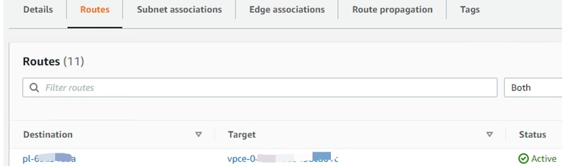

[AWS] Amazon S3 使用场景及原理分析
[AWS] Amazon S3 Scenario and Analysis
作为公有云上基础的存储组件，Amazon S3 被用在相当多的场景中，本文列举了几种企业客户在 Public cloud 环境以及 Hybird cloud 环境中 S3 的集中典型使用场景。
先看两种最基础的场景：
User Story 1： 通过URL直接访问 S3 Bucket
Bucket 以及其中具体的 object 的URL类似这样的形式：
https://<bucket-name>.s3.amazonaws.com
通过配置，这样的URL可以在任何地方利用浏览器像访问网盘一样访问，或者通过客户端工具，应用程序等直接访问。
这是S3中最基本的场景，这种简单的访问背后，需要配合相当多安全因素的考虑。除了非常小心地添加 policy，还有访问端诸如 Authorization，特定的 header，Signature Version 等设置。实际上，直接对 bucket 的访问，并不是推荐的使用场景。
User Story2： 通过 Access Point 访问
通过 AP 访问 S3 bucket是更为合理也更为安全的方式。
AP 仍然是全球可达的，对比上面的场景1，AP克服了直接访问bucket的诸多缺点：
- AP 可以隐藏 bucket 的真实名字
- AP 可以限定请求的来源 （来自 internet 或来自 VPC 内部）
- 可以为不同 client 配置相应的访问权限
- AP 支持跨账户访问
- 另外，AP 的访问时是受限的，仅限于对 object 的存取，而把对 bucket 的管理留给 API，显然这样更加安全
接下来是企业客户比较常用到的场景：
User Story3：企业客户在公有云环境访问 S3 服务
上面的场景1，2，客户端应用可以在全球任何地方，只要有 internet，就可以通过 internet 访问 S3 服务.
而企业客户的公有云环境，有时候是没有 internet 的访问权限的，或者说是客户的主动选择，VPC 与 internet 隔离，以保证安全。那么 VPC 中的 instance，如何访问 S3? Amazon 提供的解决方案是 S3 VPC Endpoint.
Endpoint 有两种形式，多数以 interface 的形态存在，而少数，以 gateway 的形态存在，S3 VPC Endpoint 就是一种gateway endpoint.
简单来讲，Amazon 提供的这个 endpoint 位于 VPC 的边缘，作为一个访问 S3 的 gateway，当与 VPC 上的 route table 绑定之后，在路由表中生成一条新的路由，所有从 VPC 到 S3 的请求，被导向 endpoint，再通过 Amazon 自己的网络，送到 S3，从而达到绕过 internet 的目的。
这条路由看起来比较特殊：
其中：
- pl-xxx 是一个 prefixlist 对象，定义了 S3 所有可能的 IP 前缀
- vpce-xxx 就是 endpoint gateway
User Story4：将 Amazon S3 作为 on-prem 存储的 cloud tier
User Story3 中 gateway endpoint 解决了从 VPC privately 访问 S3 服务的问题，接下来又出现一个新问题。
我们的存储设备在 on-prem 数据中心，已经与 AWS 建立了 Direct Connect. 存储设备需要访问 S3 并将 S3 bucket 作为 cloud tier，当然，因为 on-prem 数据中心可以访问 internet，所以从公网确实可以访问到 S3，但这样实际上没有利用到 DX，而 DX 不管从带宽和安全性上，都远好于 internet。所以我们需要将访问 S3 的路径切换到 DX 上。
如果套用 user story3 的方案，虽然存储设备与 AWS 的 VPC 能通，却不在 VPC 之中， 这就是面临的问题。
实际上，这是一个 Hybird-cloud 数据中心中非常典型的场景:
客户使用了 Amazon S3 服务，需要从 on-prem 数据中心访问，不管是出于合规性还是性能原因，不能走 internet.
以前的思路，依然是基于 user story 3，额外需要在 VPC 中部署一个代理服务器，从 on-prem 对 S3 的访问，发送到 proxy 上，然后在 VPC 内部，由 proxy 转发到 S3 VPC Endpoint. 这样是可行的，但是结构变得比较复杂，引入了多个依赖，直到去年。
去年（2021），AWS 发布了一个新的方案，**AWS PrivateLink for Amazon S3**. 简单来说，AWS 提供一个新的 endpoint，跟 user story3 不同，这个 endpoint 以 interface 的形态，存在于 VPC 的内部，在每个 subnet 占据一个 IP 地址，并提供一个域名，确保能够在公网的 DNS，解析到这个 private 的 IP 地址上。
这样的话，S3 的访问点，被映射到这个 endpoint 上，而 S3 的访问问题变成了 endpoint 的可达问题。恰好，on-prem 的存储设备从 DNS 拿到 endpoint 的 private 地址，通过路由，选择经 DX 达到 VPC 的路径， 完美绕开了 internet.